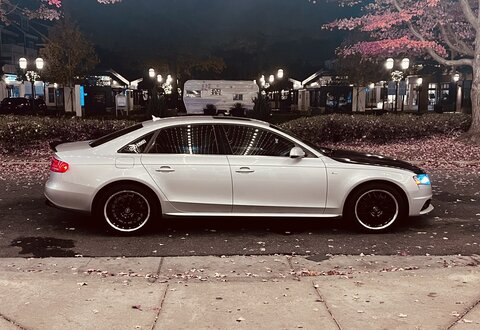
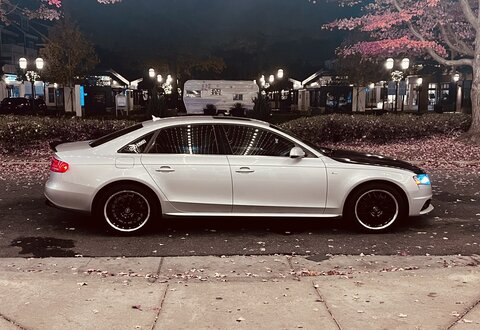

Home
Introduction
Hello everyone, you have landed on my webpage. This is my personal based page and is not school related. If you are looking for my school related webpage please click the link down below in the footer. Thx.
Photo Gallery


 
